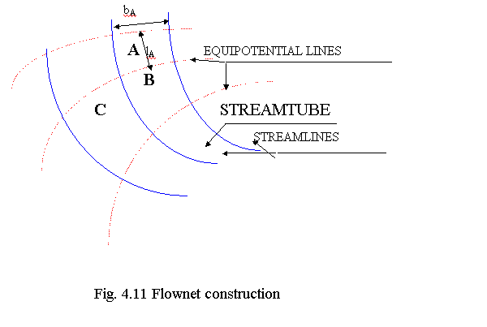

Q.4 Write about flow net and its applications. Ans..
Answer :
A flow net is a grid obtained by drawing a series of equipotential lines and streamlines. Flow net is very much useful in analysing the two dimensional, irrotational flow problems. Usually, the flow net is a square mesh. However in regions, where the boundaries converge or diverge or bend, the flow net does not contain squares.
The flow nets can be constructed only in following situations -
(i) The flow should be steady. This is so because streamline pattern for unsteady flow does not remain constant, it changes from instant to instant.
(ii) The flow should be irrotational, which is possible only when flowing fluid is an ideal fluid (having no viscosity) or it has negligible viscosity.
(iii) The flow should not be governed by the force of gravity, because under the action of gravity, the shape of the free surface changes constantly, and hence no fixed flow net pattern can be obtained.

Applications of Flow net
The flow net helps in depicting and analysing the behavior of irrotational flow. Many flow phenomena which cannot be analysed easily by mathematical means can be analysed by drawing flow nets.
The following are some of the important uses of flow net analysis -
(i) For given boundaries of flow, the velocity and pressure distribution can be determined, if the velocity distribution and pressure at any reference section are known.
(ii) Loss of flow due to seepage in earth dams and unlined canals can be evaluated.
(iii) Uplift pressures on the underside (bottom) of the dam can be worked out.
(iv) Outlets can be designed for their streamlining.